703308 VO High-Performance Computing
University of Innsbruck
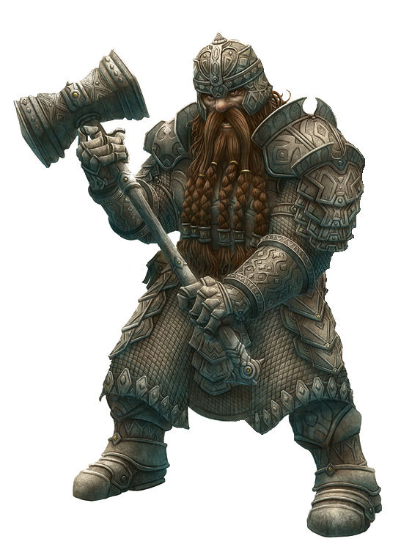
What are we going to discuss?
What have you already heard?
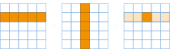
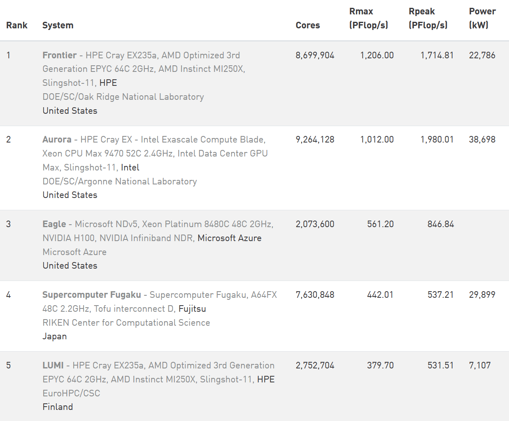
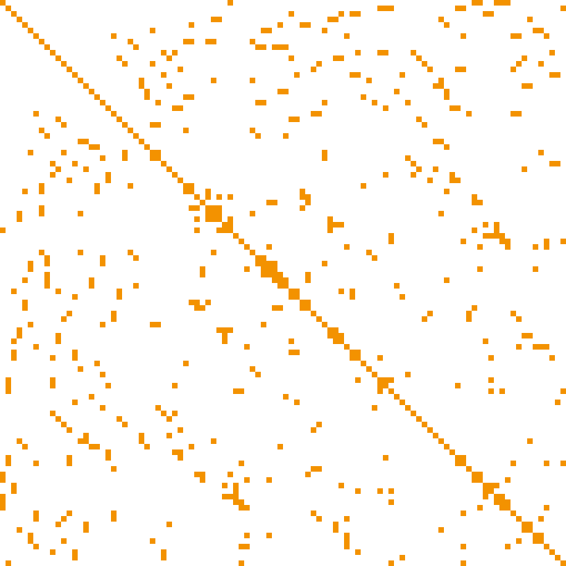
typedef struct sparseElement {
int i; int j; double value;
} sparseElement;
sparseElement sparseMatrix[SIZE];
sparseMatrix[0].i = 0;
// ############# vs. #############
typedef struct sparseMatrixT {
int i[SIZE]; int j[SIZE];
double values[SIZE];
} sparseMatrixT;
sparseMatrixT sparseMatrix;
sparseMatrix.i[0] = 0;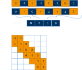
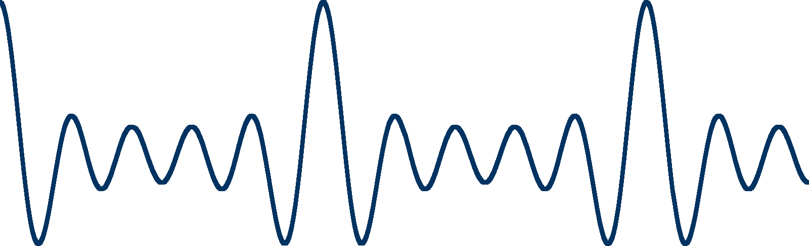
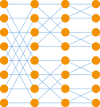
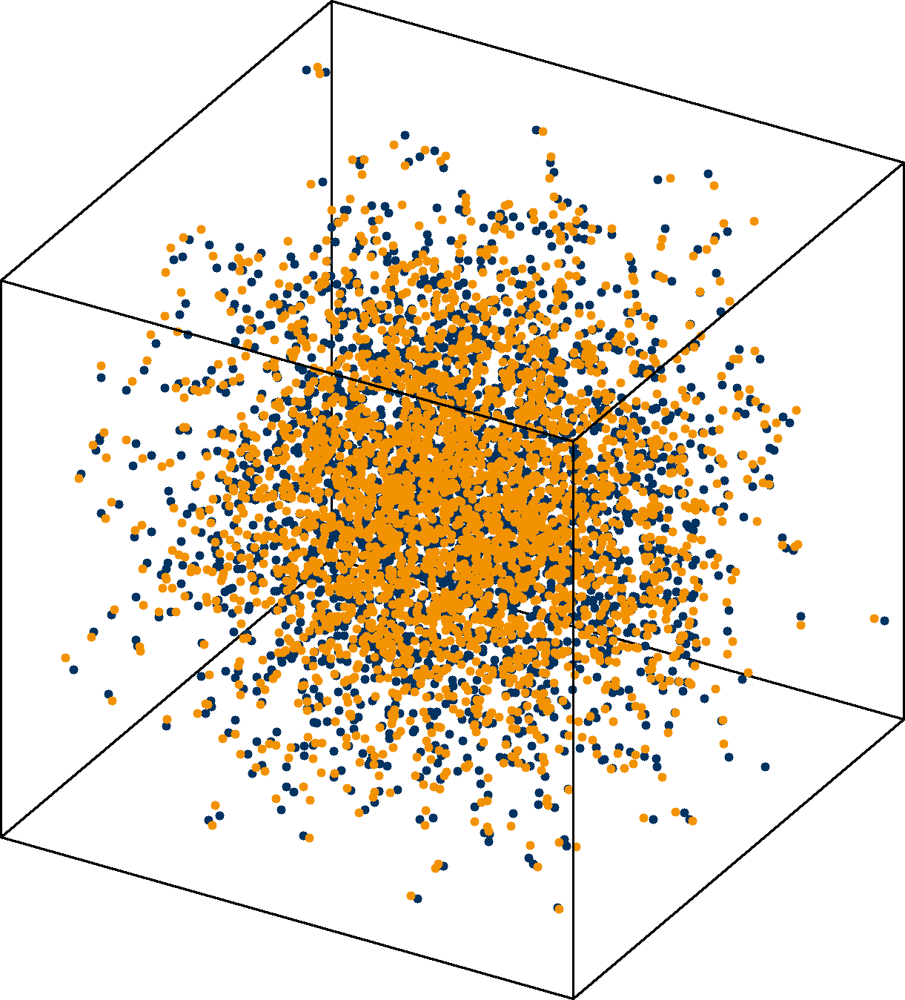
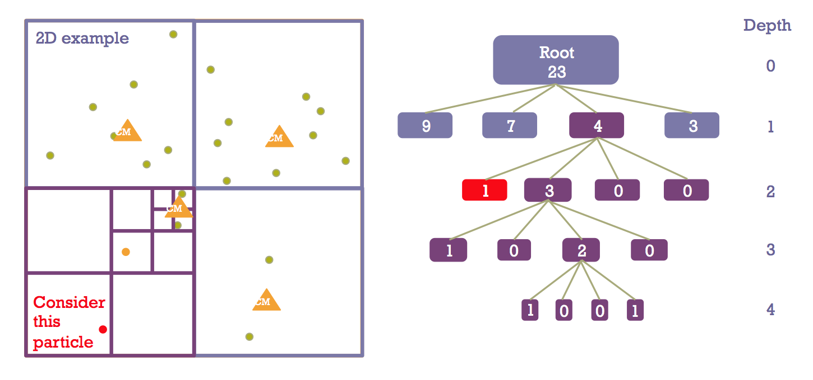
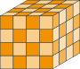
structured grid does not imply rectangular!
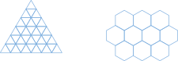
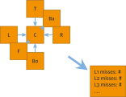
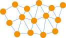
... = cells[neighbors[i]]... = cell.getNeighbor(i)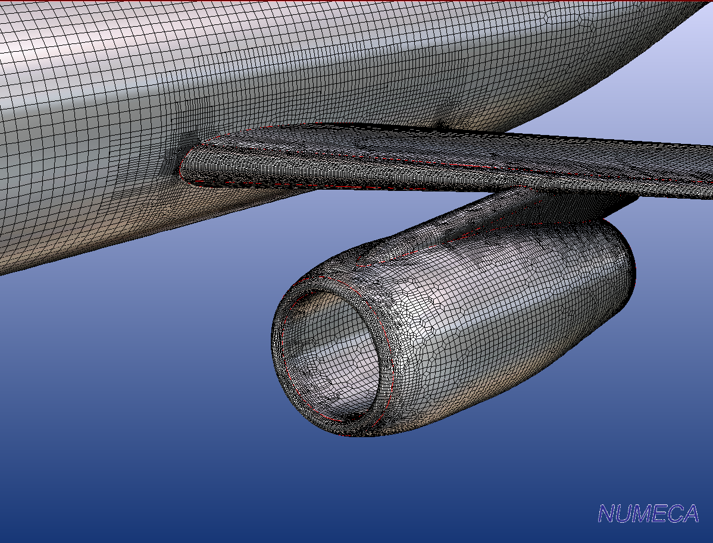
popcnt)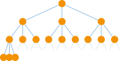
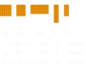
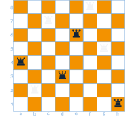
weather
| sun | rain |
|---|---|
| 0.40 | 0.60 |
mensa food
| good | bad |
|---|---|
| 0.90 | 0.10 |
mood
| good | bad | |
|---|---|---|
| sun, good | 0.95 | 0.05 |
| sun, bad | 0.70 | 0.30 |
| rain, good | 0.75 | 0.25 |
| rain, bad | 0.10 | 0.90 |
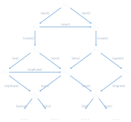
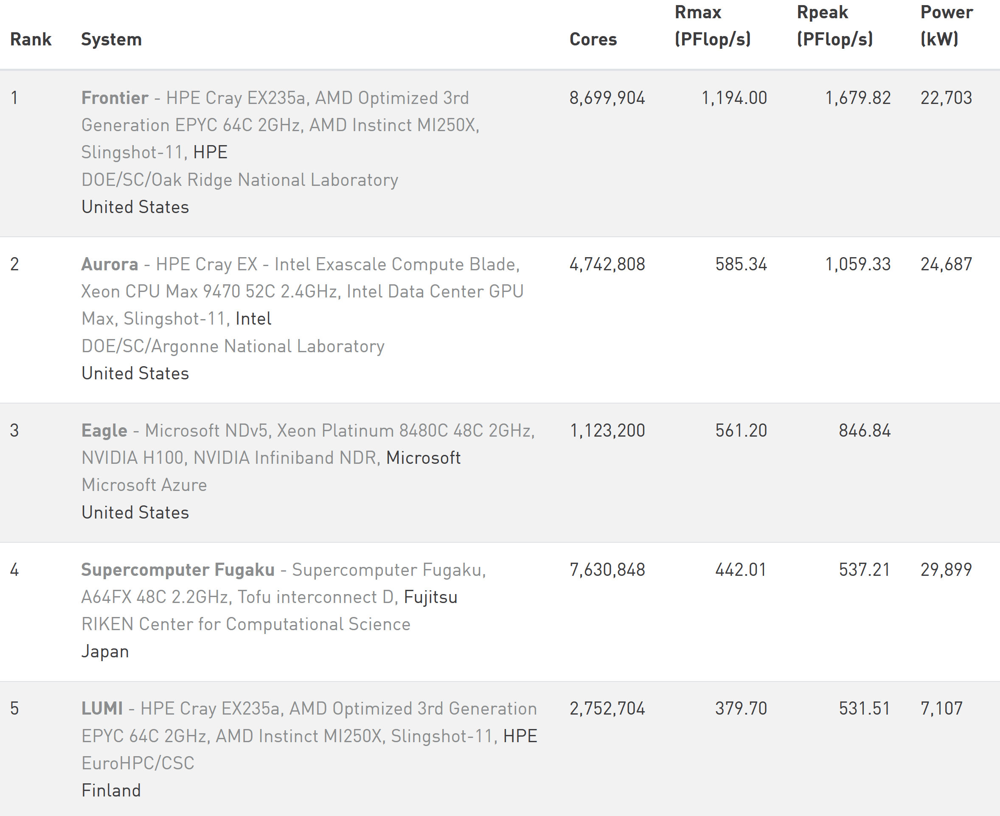
int problem-O0 (but also with -O2) on LCC2long long loop iterators to int halves execution timeint problem cont’dprofiled with gprof to find “hot spots”, left is int, right is long long
int problem cont’d74 // get temperature at current position
75 value_t tc = A[i];
76
77 // get temperatures of adjacent cells
78 value_t txl = (i % Nx != 0) ? A[i - 1] : tc;
79 value_t txr = (i % Nx != Nx - 1) ? A[i + 1] : tc;
// ...... snip ......
90 if (Ny > 1)
91 B[i] = tc + 0.165 * (txl + txr + tyl + tyr + tzl + tzr + (-6 * tc));
92 else
93 B[i] = tc + 0.2 * (txl + txr + tzl + tzr + (-4 * tc));int problem cont’dfar-fetched idea, but maybe branch (mis-)predictions? compared with perf stat:
2328.650634 task-clock:u (msec) # 0.996 CPUs
0 context-switches:u # 0.000 K/sec
0 cpu-migrations:u # 0.000 K/sec
186 page-faults:u # 0.080 K/sec
5,739,935,525 cycles:u # 2.465 GHz
10,671,532,880 instructions:u # 1.86 IPC
1,196,623,336 branches:u # 513.870 M/sec
1,030,678 branch-misses:u # 0.09%
2.338387625 seconds time elapsed 4639.728721 task-clock:u (msec) # 0.998 CPUs
0 context-switches:u # 0.000 K/sec
0 cpu-migrations:u # 0.000 K/sec
186 page-faults:u # 0.040 K/sec
11,444,184,736 cycles:u # 2.467 GHz
10,972,976,005 instructions:u # 0.96 IPC
1,196,977,569 branches:u # 257.984 M/sec
1,030,347 branch-misses:u # 0.09%
4.650327844 seconds time elapsed703308 VO High-Performance Computing — The 13 Dwarfs of HPC